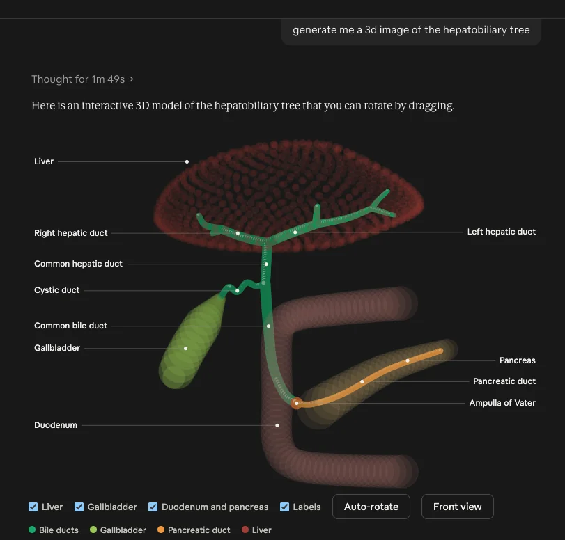
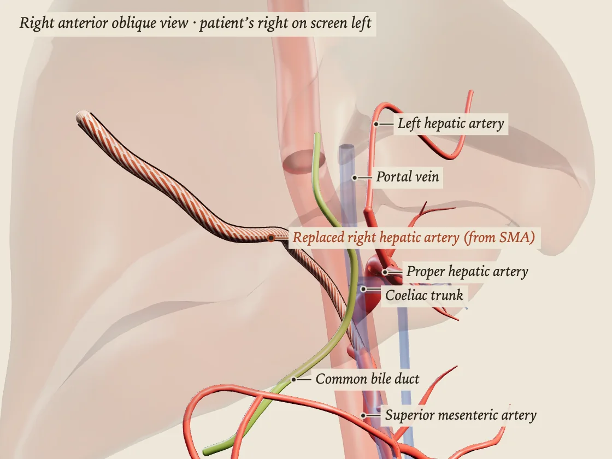
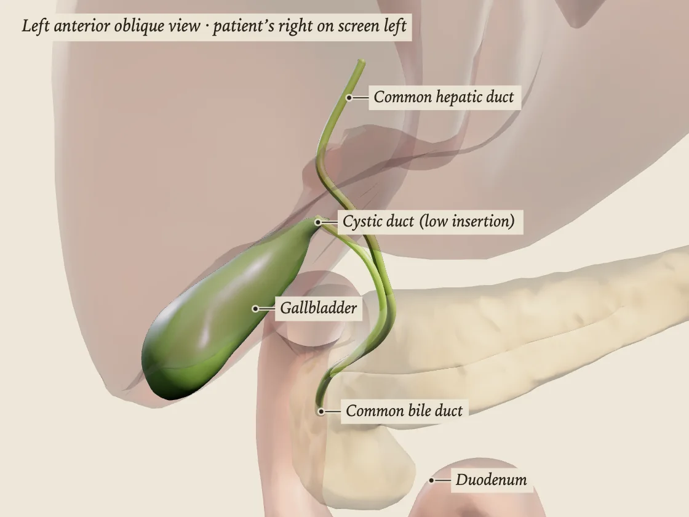

Same subject, two figures
Subject: the hepatobiliary tree


Left, a general LLM: a liver of points, a corkscrew cystic duct, a gallbladder hanging free of the liver, the pancreas outside the duodenal C-loop, a tube for a duodenum and a label off its structure. Right, Sagittal, from reconstructed anatomy.
How it works
Ask
Ask your AI for any structure, region or variant in your own words:
the hepatobiliary tree
,the aortic arch and its branches
,a replaced right hepatic artery off the SMA
.Build
Sagittal starts from base organs reconstructed from open CT data and atlases. New vessels and ducts are drawn only through named landmarks, and every claim cites a source.
Study
Open the figure it saves. Rotate it, turn structures on and off, compare a variant with normal anatomy, read the cited claims, and save the labelled figure as an image.
Use Sagittal
Sagittal is an MCP server, so it works with any AI app that accepts MCP connectors: Claude, ChatGPT, Claude Code and others. Add this address as a connector; there is nothing to install, and figures appear in the chat.
https://sagittal-mcp.fly.dev/mcpclaude.ai or Claude Desktop: Settings, Connectors, Add custom connector. Paste the address above.
ChatGPT: Settings, Apps and Connectors, turn on developer mode, then create a connector with the address above.
Claude Code: run this once in a terminal.
claude mcp add --transport http --scope user sagittal https://sagittal-mcp.fly.dev/mcpAny other MCP client: add a remote (Streamable HTTP) MCP server with the address above.
Then ask for a figure, for example
the aortic arch and its branches
oran aberrant right subclavian artery
.
Prefer to run it yourself? Clone the repository and link skills/sagittal into ~/.claude/skills to use it as a Claude Code skill.
Examples
Three figures built from the base anatomy, saved here as images.
-

Plate IReplaced right hepatic artery from the SMA
-

Plate IILow insertion of the cystic duct
-

Plate IIIAberrant right subclavian artery